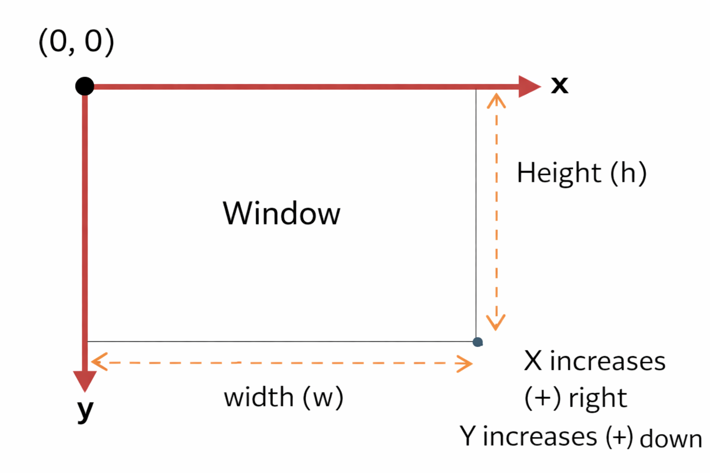
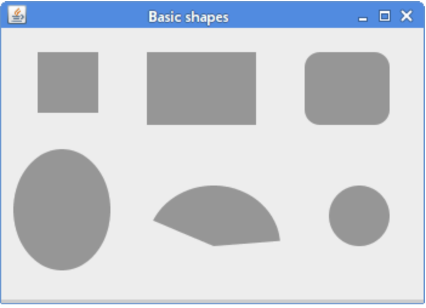
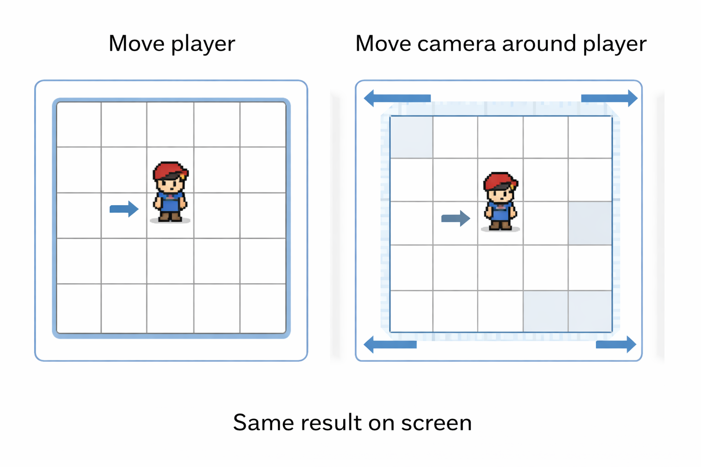
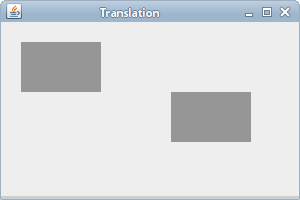
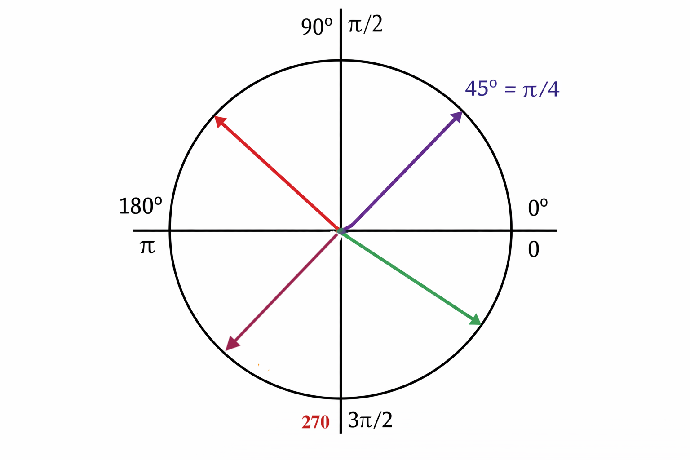
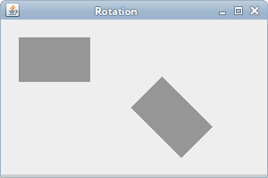

Why Drawing with Java2D
This is where objects become visible. Instead of just writing classes and methods, we can now build objects that control what appears on the screen. This helps connect object-oriented design to something you can actually see.
Main Terminology
paintComponent.
1
Big Picture
Before we draw anything, we need to understand how the screen works.
Big Picture
Before we draw anything, we need to understand how the screen works.
Swing does not expect us to draw directly in the window. Instead, we place a panel inside a frame, and Swing asks that panel to paint itself when needed.
2
The setup
Start the app, build the window, and create the panel where drawing will happen.
The setup
Start the app, build the window, and create the panel where drawing will happen.
We want a setup that is clean now and still makes sense later when this grows into animation and simple game structure. Instead of putting everything in main, we split responsibilities across three classes.
JFrame and sets up the window.
JPanel and will hold our drawing code.
Right now we are using JPanel for drawing. Later, we will use it to organize components like buttons and custom elements using layouts.
This gives us a better OOP model:
MainAppusesGameWindowto start the GUIGameWindowhas aJFramefieldGameWindowadds aGamePanelto the frameGamePanelis where drawing belongs
We are not turning our class into a window. Our class owns a window. This keeps the design closer to the OOP ideas we have been practicing.
Create class 1: MainApp +
MainApp should stay small. Its job is just to launch the GUI.
For now, treat SwingUtilities.invokeLater(...) as the standard safe way to start a Swing app. We will not go deep into that yet.
Create class 2: GameWindow +
GameWindow owns the JFrame. The constructor builds the window. The runGUI() method shows it.
1️⃣ Create the window
2️⃣ Create JFrame object
First, we create a JFrame object and store it in the
frame field. This gives our GameWindow object
an actual window to manage.
3️⃣ Set the size
This sets the size of the window to 600 pixels wide and 400 pixels tall.
4️⃣ Handle closing
This tells Java what to do when the user clicks the X button. Here, it closes the program completely.
If we forget this, the window will close but the program will keep running in the background.
5️⃣ Add the panel
This adds a GamePanel object into the frame. The panel is the
surface where our drawing will happen.
6️⃣ Center the window
This places the window in the center of the screen instead of some random spot.
6️⃣ Create the runGUI method
This makes the window appear on the screen.
setVisible(true)?
setDefaultCloseOperation()?
Create class 3: GamePanel +
GamePanel is the drawing surface. We are not drawing anything yet. We are just putting the correct method in the correct class.
1️⃣ Extend JPanel
We extend JPanel to make it a drawable area inside a window.
2️⃣ Override paintComponent
This is the method Swing calls whenever the panel needs to be drawn.
super.paintComponent(g) first?
3️⃣ Use Graphics2D
This gives us more powerful drawing tools than the basic Graphics object.
That is enough for the starting structure. Next, we will add real drawing code inside paintComponent.
Full code so far
3
Points and coordinates
Points and coordinates
Before we draw shapes, we need to understand how the screen keeps track of position. In Swing, the coordinate system starts at the top-left corner of the panel.
(0,0) located?
Coordinate System +
In Swing, the point (0,0) is at the top-left corner of the panel.
The x value increases as we move to the right, and the y
value increases as we move downward.

Points +
1️⃣ Create 4 coordinate pairs
Add these variables inside paintComponent:
These variables store 4 locations on the panel.
2️⃣ Draw each location
A real screen pixel is tiny, so we will use a very small square (6x6 pixels) to make each point easier to see.
3️⃣ Add GamePanel to the GameWindow
Create and add the panel:
This places the drawing panel inside the window.
Which class is responsible for drawing:
GameWindow or GamePanel?
4️⃣ Set color
Add this before drawing your points:
All points drawn after this will use this color.
How would you change individual points?
4
Lines
Connect two coordinate positions with one drawing command.
Lines
Connect two coordinate positions with one drawing command.
Structure: drawLine(x1, y1, x2, y2)
This draws a line from one point to another.
(x1, y1) → start point
(x2, y2) → end point
What happens if the start and end points are the same?
Draw Lines +
1️⃣ Draw lines between your points
2️⃣ Add thickness
This makes the lines thicker.
3️⃣ Add color
Set color before drawing to change how the lines appear.
4️⃣ Labels drawString(text, x, y)
This draws text on the screen at a specific position.
"(0,0)" → the text to display
8 → x position (move right)
20 → y position (move down)
The text is drawn, just like shapes and lines.
5️⃣ Helper method
Put all of this into a method:
The drawing object (Graphics2D) is created inside paintComponent.
Other methods cannot see it unless we pass it in.
6️⃣ Call method inside paintComponent
paintComponent controls when drawing happens.
Your method controls what gets drawn.
What problem do you get if all drawing stays inside
paintComponent?
Drawing Multiple Line +
We will create a method that draws many lines using for loop instead of writing each one manually.
1️⃣ Create a method to draw Grid
2️⃣ Create for-loop
Each time the loop runs, x and y increase by 50 pixels.
3️⃣ Call method from paintComponent()
5
Basic shapes
Moving to higher-level shape methods
Basic shapes
Moving to higher-level shape methods

We will draw six basic shapes on the panel: a square, a rectangle, a rounded rectangle, an ellipse, an arc, and a circle.
Create a method drawShapes(Graphics2D g2) and call it from paintComponent to keep things organized.
Add a new color. Use RGB color picker g2.setColor(new Color(149, 68, 86));
Draw a rectangle +
Add a rectangle
Draw a filled rectangle near the top-left:
x = 40, y = 30 set the top-left corner.
80 is the width and 80 is the height.
Draw a square +
Add a square
Draw a square by making width and height the same:
A square is just a rectangle with equal width and height.
Draw a rounded rectangle +
Add a rounded rectangle
Use this to round the corners:
The last two numbers control how rounded the corners are.
Draw an oval +
Add an oval
Draw a tall oval:
The oval fits inside the rectangle made by these coordinates and dimensions.
Draw an arc +
Add an arc
Draw a filled arc:
The last two numbers control the start angle and how far the arc sweeps.
An arc is part of an oval. You control it with two values:
startAngle → where the arc begins
arcAngle → how far it goes
startAngle measured in degrees, starting from the right side (3 o’clock)
0° → right
90° → down
180° → left
270° → up
arcAngle starts at the right, using the same angle measurements as startAngle. It can be positive (counterclockwise) or negative (clockwise).
Draw a circle +
Add a circle
Draw a circle by making width and height the same:
A circle is just a special oval with equal width and height.
Draw an ellipse (Ellipse2D) object with g2.draw(Shape) +
Java has two versions: Ellipse2D.Float and Ellipse2D.Double. You could use integers, but graphics libraries are designed for precision → so they use doubles.
1️⃣ Create an ellipse object
(x, y) → top-left of bounding box
width, height → size of the ellipse
2️⃣ Draw the shape object using draw() method
This works with all shapes and useful when you need to modify and transform the object
3️⃣ Fill the ellipse object
From the OOP design perspective, which is better: using shape objects or calling specific methods like
drawOval?
Graphics/Graphics2D Objects +
We can create various shape objects and then draw or fill them.
Ellipse2D.Double
Rectangle2D.Double
RoundRectangle2D.Double
Line2D.Double
Arc2D.Double
Rectangle
Polygon
Pattern:
6
Translation
Translation shifts the coordinate system before we draw.
Translation
Translation shifts the coordinate system before we draw.


1️⃣ Create a new JPanel (TransformPanel)
Override paintComponent() and a method transform(Graphics2D g2d)
2️⃣ Add a rectangle object to transform method
We will create a rectangle object at the origin so it is easy to see how it moves.
3️⃣ Copy drawCoordinates() method from GamePanel
Call the method inside the transform() method before the rectangle
4️⃣ Add TransformPanel to GameWindow
5️⃣ Call the transform method and then translate method inside paintComponent
translate(x, y) moves the coordinate system.
x → shift right
y → shift down
After calling translate, all drawing uses the new origin.
Now (0,0) is no longer the top-left. It has moved.
6️⃣ Apply transform again
Feel free to adjust colors so you know which rectangle is shown
Why undo translate?
translate changes the coordinate system for everything that comes after.
If you do not undo it, all future drawings will stay shifted.
Example:
Both shapes are affected because the coordinate system changed.
To reset:
This brings the coordinate system back.
7
Rotation
Rotation does not rotate the shape. It rotates the axes.
Rotation
Rotation does not rotate the shape. It rotates the axes.


Rotation starts from the right and goes clockwise in Java2D
Java2D rotates using radians, not degrees.
One full circle is 2π radians.
Common angles:
π / 4 = 45
π / 2 = 90
π = 180
2π = 360
Option 1: write the angle using Math.PI
This rotates by 45 degrees.
Option 2: convert from degrees using Math.toRadians()
This does the same thing, but easier to read.
1️⃣ Add rotate(theta)
Rotate the coordinate system around the origin:
Your shape will rotate around (0,0).
Notice the problem: The object does not spin in place. It moves in a circle.
2️⃣ Rotate around a specific point
Use the overloaded version:
Now rotation happens around (50,50).
3️⃣ Use center of your shape
To make an object spin in place, rotate around its center.
If your rectangle is at (200,200) with size 50×50, what is its center?
(x + width/2, y + height/2). So to rotate around center:
Why Undo Rotate?
rotate() changes the coordinate system for everything that follows.
If you do not undo it, all future drawings will stay rotated.
Example:
Both shapes are affected because rotation is still active.
To reset:
This brings the coordinate system back.